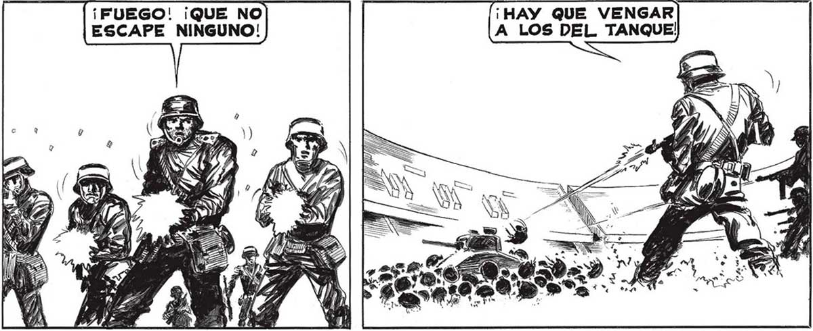

¿ESTA BIEN, SEÑOR SALVO? Gl, PABLO, Sl... PERO FALTO” MUY POCO PARA QUE ME DES” PACHARAN . ENTRO AL ESTADIO. HASTA HACE POCO Ol EL CANON. PERO NO_SE LE OYE MAS. NO ENCONTRARA YA MAS CASCARUDOS. Y PO ESTABAMOS VIVIENDO LA HISTORIA, NO ESCRIBIÉNDOLA. ENTRAMOS SIN NUE¡féy Los DE-] [PARECE QUE NO LES] | MAS, FRANCO?) [GUSTO” LA COSA. SE DESBANDARON. N VENCIDO!] GE HABRAN ACORDADO QUE TENÍAN ALGUNA DILIGENCIA... TAM| BIÉN, LOS BICHOS ESTOS SON | FIEROS... SUERTE QUE LAS BALAS LES ENTRAN COMO A MANTECA . LES DEBO LA VIDA, AMIGOS... PERO NO PODEMOS QUEDARNOS QUIETOS: PUEDEN VENIR MAS.¿ Y EL TANQUE? ME 7 fe 7 Wi 5 MES ¡UN MOMENTO, TENIENTE ! ¡NO NOS DEMOREMOS! ESTOY ANOTANDO LO QUE NO ME GUSTA EL SILENFASO... VEO QUE VARIOS CIO DEL TANQUE... MILICIANOS RESULTARON SS MUERTOS. ¿PUEDE DECIRME COMO MURIERON 2 ///, A MEDARDO SOSA NISE LE (Vd OCURRIO” CRITICAR A LOS FUlin GITIVOS. LA ORDEN QUE TENEMOG ES APOVARLO. ¡ VAMOS! ¡CARGUEN DE NUEVO LAS ARMAS, Y ADENTRO! | ÑOS MOLESTAMOS EN CONTESTAR A RUPERTO MOSCA, EL. HISTORIADOR. ¡FUEGO! ¡QUE NO| ESCAPE NINGUNO! VA OPOSICION AL ESTADIO. NG ) NM” CANCHA, LO VIMOS ... 107
